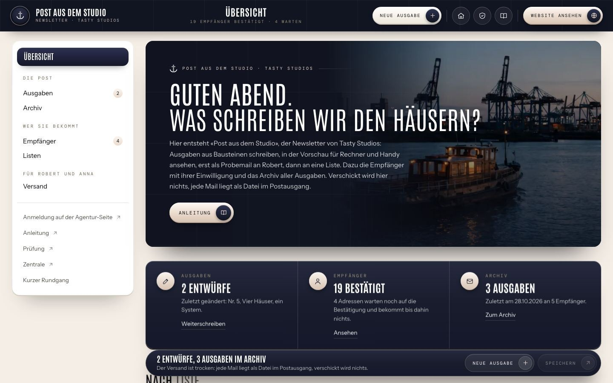
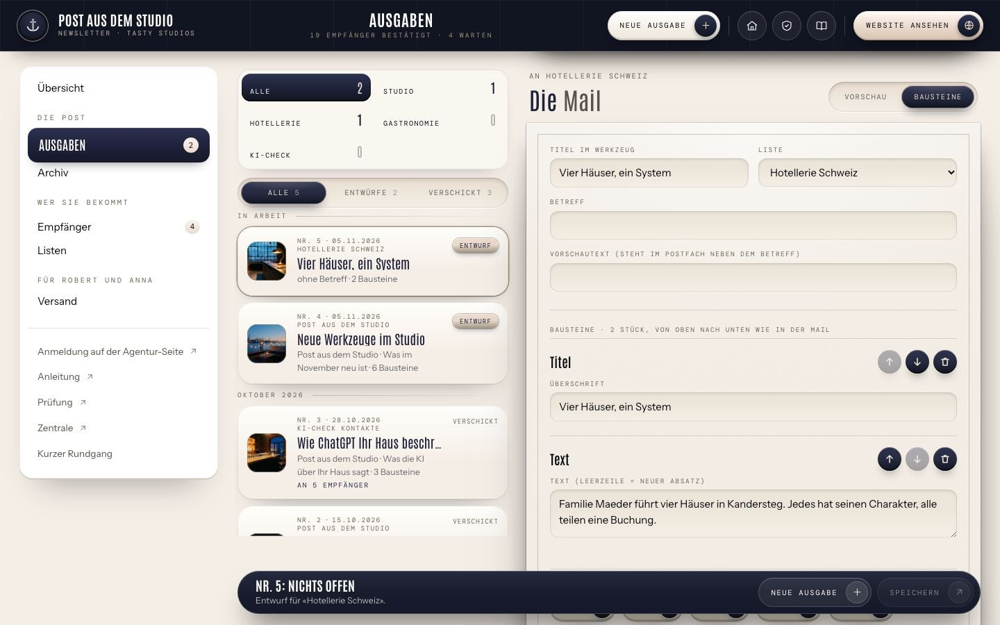
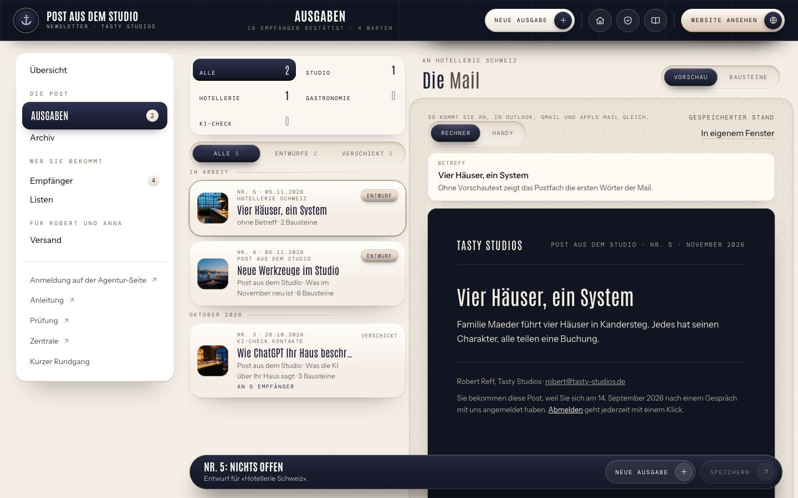
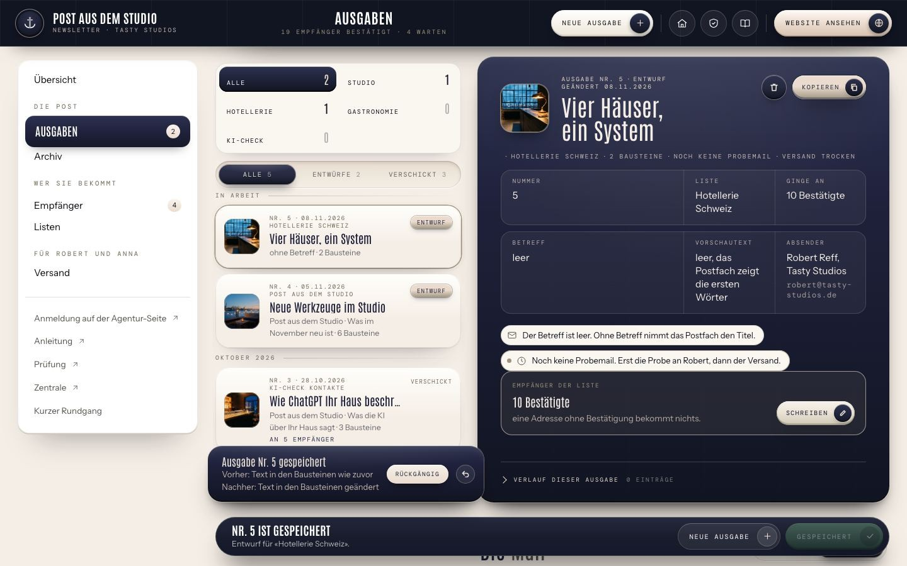
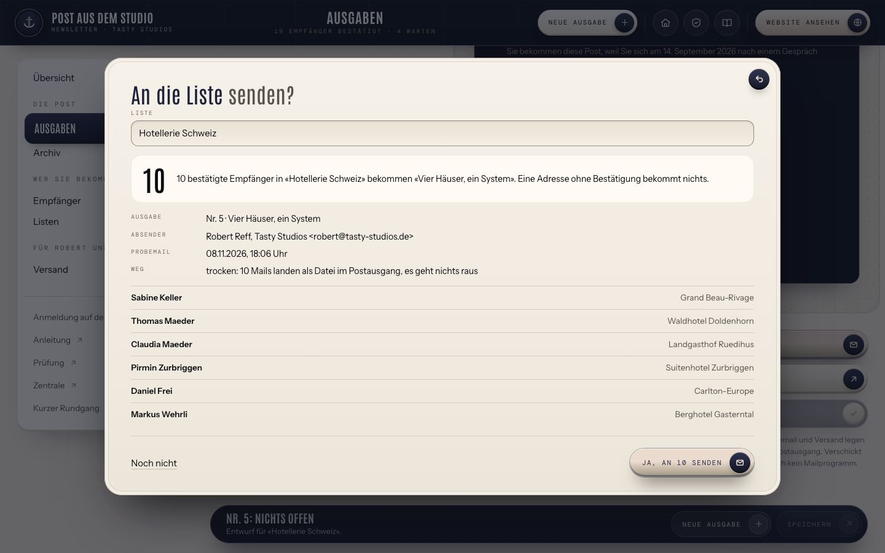
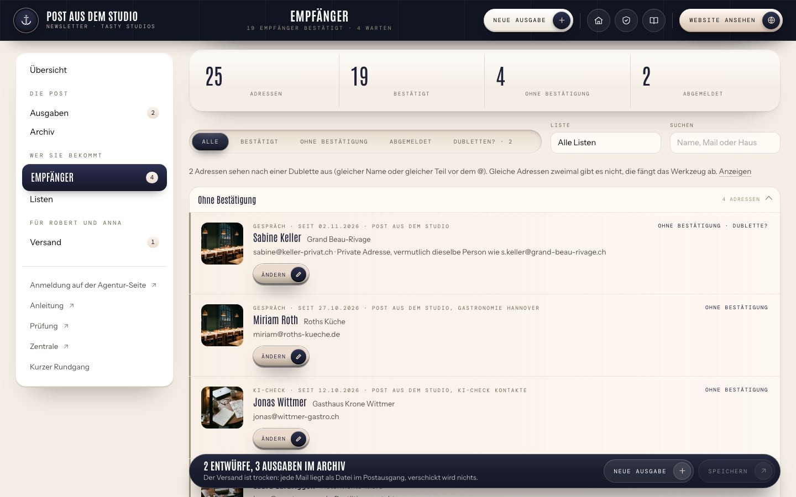
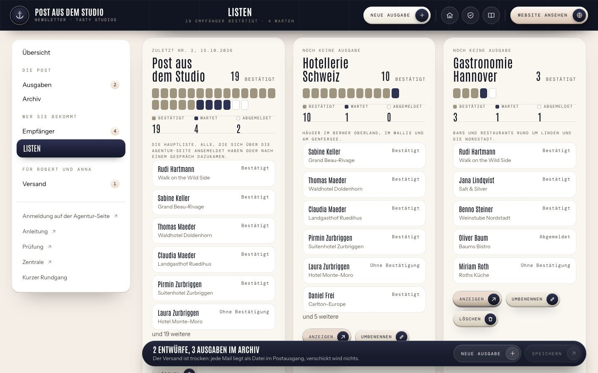
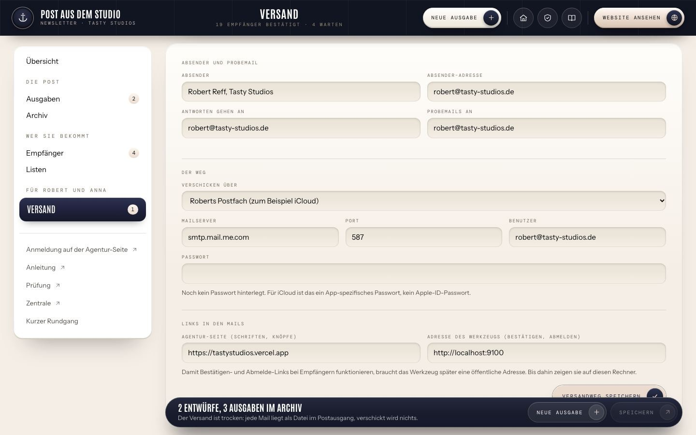

So ist das Werkzeug aufgebaut.
Mit «Post aus dem Studio» schreiben Robert und Anna den Newsletter von Tasty Studios, pflegen die Empfängerlisten und bereiten den Versand vor. Verschickt wird hier nichts: jede Mail liegt als Datei im Postausgang.
- Oben in der Übersicht drei Felder: wie viele Entwürfe es gibt, wie viele Empfänger bestätigt sind und wer noch wartet, und was zuletzt verschickt wurde. Darunter die Listen mit Foto, links «Zuletzt geschrieben», rechts «Neu angemeldet».
- Links die Bereiche: «Ausgaben» und «Archiv», «Empfänger» und «Listen», dazu «Versand». Die Zahl daneben zeigt, was auf dich wartet. Auf dem Handy klappt der Rand über «Bereiche» auf.
- Unten die Leiste: «Speichern» ist grau, solange nichts offen ist, gelb, wenn eine Änderung wartet, grün, wenn sie gespeichert ist.

Eine Ausgabe schreiben.
Unter «Ausgaben» steht links jede Ausgabe, rechts die gewählte mit Betreff, Empfängern und Hinweisen. Darunter «Die Mail» mit zwei Ansichten: «Vorschau» und «Bausteine».
- «Neue Ausgabe» legt eine Ausgabe an, mit einem Titel und einem Text als Anfang.
- Unter «Bausteine» Titel, Liste, Betreff und Vorschautext eintragen. Darunter die Bausteine von oben nach unten: Titel, Text, Bild, Zitat, Knopf oder ein Projekt aus dem Atelier. Mit den Pfeilen verschieben, mit dem Papierkorb entfernen.
- Ein Bild braucht für den echten Versand eine öffentliche Adresse mit https://. Ein Hinweis rechts sagt es, wenn eines fehlt.

So kommt sie an.
«Vorschau» zeigt die Mail so, wie sie im Postfach ankommt: in der Gestaltung der Agentur-Seite, so gebaut, dass sie in Outlook, Gmail und Apple Mail gleich aussieht.
- Oben zwischen «Rechner» und «Handy» wechseln.
- Darüber die Zeile, wie das Postfach sie zeigt: Betreff und Vorschautext.
- «In eigenem Fenster» öffnet die Mail gross in einem neuen Fenster.

Speichern mit Quittung.
Gespeichert wird nur, was du selbst speicherst. Nichts geht still verloren und nichts wird still gespeichert.
- Sobald etwas geändert ist, wird «Speichern» in der Leiste gelb.
- Danach erscheint eine Quittung mit «Vorher» und «Nachher» und «Rückgängig». Rückgängig stellt den alten Stand wieder her. Das gilt für jede Änderung: Empfänger, Listen, Import, Versandweg, Versand.
- Wechselst du mit einer offenen Änderung zu einer anderen Ausgabe oder einem anderen Bereich, fragt das Werkzeug: speichern, verwerfen oder zurück.

Erst die Probe, dann die Liste.
Unter der Mail stehen «Probemail an Robert» und «An die Liste senden». Beide nehmen den gespeicherten Stand.
- «Probemail an Robert» legt eine Probe in den Postausgang, an die Adresse unter «Versand». Die Quittung hat «Ansehen».
- «An die Liste senden» zeigt zuerst eine Zusammenfassung: welche Liste, wie viele Bestätigte, wer aussen vor bleibt, wer genau. Erst «Ja, senden» schickt.
- Solange der Versand trocken ist, landen die Mails als Dateien im Postausgang, und «Rückgängig» nimmt den Versand zurück. Jede Ausgabe hat unten einen Abmelde-Link.

Wer die Post bekommt.
Unter «Empfänger» stehen alle Adressen mit Haus, Herkunft (Website, Gespräch, KI-Check), Datum der Einwilligung und Stand.
- Oben die Zahlen, darunter die Auswahl nach Stand, nach Liste und eine Suche. «Dubletten?» zeigt Adressen mit gleichem Namen oder gleichem Teil vor dem @.
- «Ändern» öffnet das Fenster mit allen Angaben und den Listen. Abgemeldete bleiben gesperrt: keine neue Anmeldung, kein Versand.
- «Importieren» liest eine CSV-Datei, zeigt erst, was neu, doppelt, gesperrt oder fehlerhaft ist, und übernimmt dann. «Exportieren» speichert die aktuelle Auswahl als CSV.
- «Anmeldung durchspielen» zeigt die doppelte Einwilligung: Eintrag ohne Bestätigung, Bestätigungsmail im Postausgang, Klick auf den Link bestätigt.

Die Listen.
Jede Liste hat eine Karte: wie viele bestätigt sind, wer wartet, wer sich abgemeldet hat, und wann zuletzt eine Ausgabe an sie ging.
- «Neue Liste» legt eine Liste an, «Umbenennen» ändert Name und Beschreibung.
- «Löschen» entfernt nur die Liste, die Adressen bleiben. Über die Quittung kommt alles zurück.
- «Anzeigen» öffnet die Empfänger dieser Liste.

Archiv und Versandweg.
Das «Archiv» zeigt jede verschickte Ausgabe mit Datum, Liste und Empfängerzahl. Unter «Versand» stehen Absender, Versandweg und der Postausgang.
- Im Archiv «Ansehen» für die Mail, «Öffnen» für die Ausgabe, «Als neue Ausgabe» für eine Kopie als Entwurf.
- Unter «Versand» Absender, Antwortadresse und die Adresse für Probemails. Der Weg: Roberts Postfach (wie das Kontaktformular der Agentur-Seite über iCloud) oder ein Dienst, den Robert wählt.
- Darunter der Postausgang: Probemails, Bestätigungen und Ausgaben, jede mit «Ansehen».

Wenn etwas nicht geht.
Jede Meldung des Werkzeugs nennt ein Stichwort. «Was tun?» in der Meldung führt zur Prüfseite, dort steht zu jedem Stichwort, was man sieht, warum und was hilft.